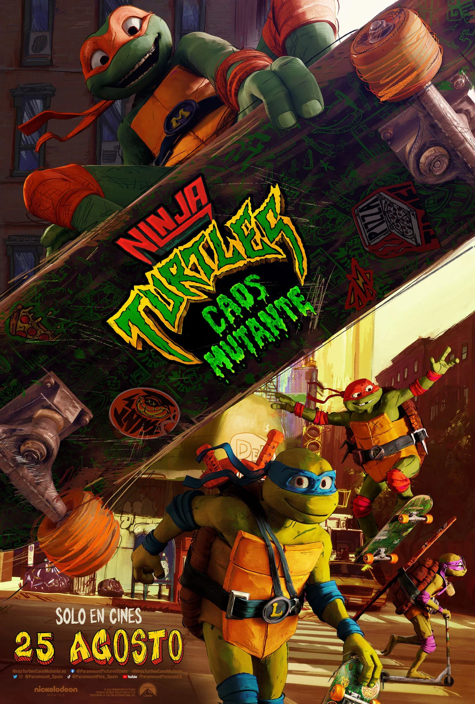
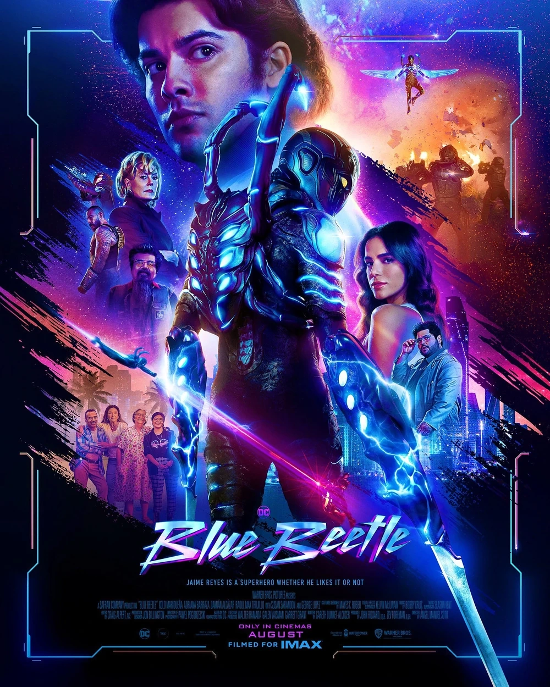

Gran Turismo

- Descripción: Basada en la verdadera historia de Jann Mardenborough, la película es la historia de un adolescente que juega a Gran Turismo y que, gracias a su habilidad con los videojuegos, gana una serie de concursos de Nissan para convertirse en piloto de carreras profesional.
- Duración: 90 Minutos
- Fecha de Estreno: 24/8/23
Tráiler Oficial
Los Juegos del Hambre 5

- Descripción: Es la mañana de la cosecha de la décima edición de Los juegos del hambre y, un joven Corolianus Snow, se prepara para una ocasión muy especial: alcanzar la gloria como mentor de los Juegos. La familia Snow atraviesa una época difícil y su destino depende de que el joven supere en ingenio y estrategia a sus compañeros como mentor del tributo que le sea adjudicado. Pero, todo parece estar en su contra cuando le humillan asignándole al tributo del Distrito 12, Lucy Gray Baird, a la que estará irremediablemente unido.
- Duración: 90 Minutos
- Fecha de Estreno: 16/11/23
Tráiler Oficial
Tortugas Ninja
- Descripción: Después de años de estar protegidos del mundo humano, estos hermanos se propusieron ganarse los corazones de los neoyorquinos y ser aceptados como adolescentes normales realizando actos heroicos. Su nueva amiga April O'Neil les ayudará a enfrentarse a un misterioso sindicato del crimen, pero pronto intentarán desequilibrarlos desatando un ejército de mutantes sobre ellos.
- Duración: 99 Minutos
- Fecha de Estreno: 17/8/23
Tráiler Oficial
Blue Beetle
- Descripción: Jaime Reyes, recién graduado de la universidad, regresa a casa lleno de aspiraciones para su futuro, solo para descubrir que la casa no es exactamente como la dejó. Mientras busca encontrar su propósito en el mundo, el destino interviene cuando Jaime inesperadamente se encuentra en posesión de una antigua reliquia de biotecnología alienígena: el Escarabajo. Cuando el Escarabajo de repente elige a Jaime como su anfitrión simbiótico, se le otorga una increíble armadura con poderes extraordinarios e impredecibles, cambiando para siempre su destino cuando se convierte en el superhéroe BLUE BEETLE.
- Duración: 90 Minutos
- Fecha de Estreno 17/8/23
Tráiler Oficial
Escape Bajo Fuego

- Descripción: Tom Harris (Gerard Butler) un agente encubierto de la CIA que trabaja en Oriente Medio se verá en peligro a causa de la filtración de su misión encubierta que revelará su verdadera identidad. Atrapado en pleno territorio enemigo, Harris y su traductor tendrán que abrirse paso en una explosiva persecución a través del desierto para llegar a Kandahar, donde les espera su punto de extracción.
- Duración: 119 Minutos
- Fecha de Estreno: 24/8/23
Tráiler Oficial
Contrarreloj

- Descripción: Matt Turner (Liam Neeson) es un hombre de negocios estadounidense que vive en Berlín y que, en el transcurso de un día, se encuentra en una carrera contrarreloj para salvar a su familia y su propia vida. Cuando lleva a sus hijos a la escuela, Matt recibe una llamada telefónica, una voz misteriosa le advierte que su vehículo está lleno de explosivos. Para proteger a su familia y resolver el misterio, Matt debe seguir las instrucciones del extraño y realizar una serie de tareas a contrarreloj. Remake de la película española de 2015 "El Desconocido".
- Duración: 90 Minutos
- Fecha de Estreno: 31/8/23